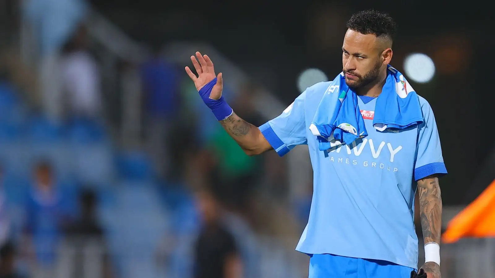

Neymar Jr. surpreendeu o mundo do futebol ao se juntar ao Al Hilal, marcando uma mudança notável em sua carreira. Sua decisão de ingressar no clube saudita trouxe uma nova dinâmica ao cenário do futebol no Oriente Médio.
A transferência de Neymar para o Al Hilal foi recebida com grande entusiasmo pelos torcedores, elevando instantaneamente o perfil do clube na região.
No Al Hilal, Neymar encontrou um ambiente competitivo e uma nova cultura futebolística, desafiando-se a alcançar novos patamares em sua carreira.
Logo em sua primeira temporada, Neymar desempenhou um papel fundamental na busca por títulos, contribuindo para o sucesso do Al Hilal em competições nacionais e continentais.
Sua parceria com outros jogadores de destaque no Al Hilal, combinada com suas habilidades únicas, tornou-o uma peça central na estratégia de jogo do clube.
A presença de Neymar no Al Hilal trouxe uma dimensão internacional ao clube, atraindo a atenção global para o futebol saudita e para o próprio jogador.
A experiência de Neymar no Al Hilal representa uma jornada única, explorando novos horizontes no futebol e contribuindo para a crescente influência do esporte na região do Oriente Médio. Seu legado no Al Hilal é eternizado pelos feitos alcançados e pela expansão do alcance do clube além das fronteiras tradicionais.
OBSERVE SUA HABILIDADE MOSTRADA EM POUCO TEMPO NO CLUBE